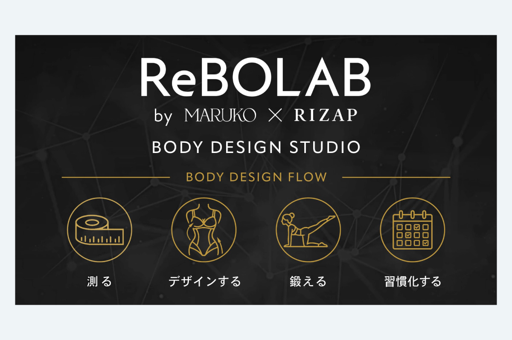

ReBOLABブランドウォール

▶
...
| 制作期間 | 2026年9月 |
| 制作時間 | 約4時間 |
| 依頼元 | MARUKO |
| 媒体 | 動画 |
| 使用アプリ | Adobe Express |
制作背景・意図
新ブランドであるReBOLABのブランドウォール制作を担当しました。イメージの共有がなされていたので、そこからデザインするをマルコのボディデザインウェアでのボディメイクに、習慣化をカレンダーに変更して編集。既にイメージに近いアイコンがなければ、Copilotで画像を生成。illustratorで画像をトレースし、各素材の線の太さを揃えて統一感が出るように編集。素材をAdobe Expressで読み込ませ、光彩のモーションがなかったので明度等を調節して発光させた素材と組み合わせて、各アイコンが光るようにアニメーションを調整して制作しました。